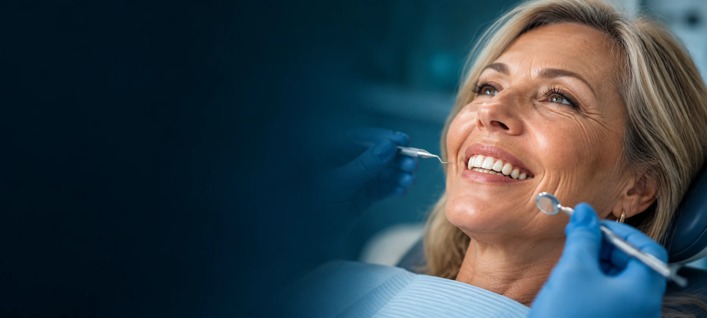
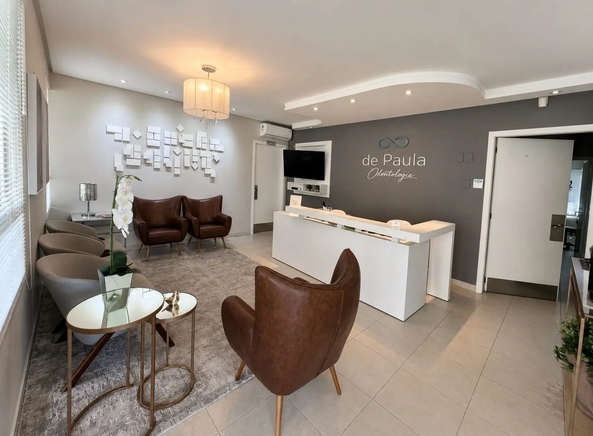
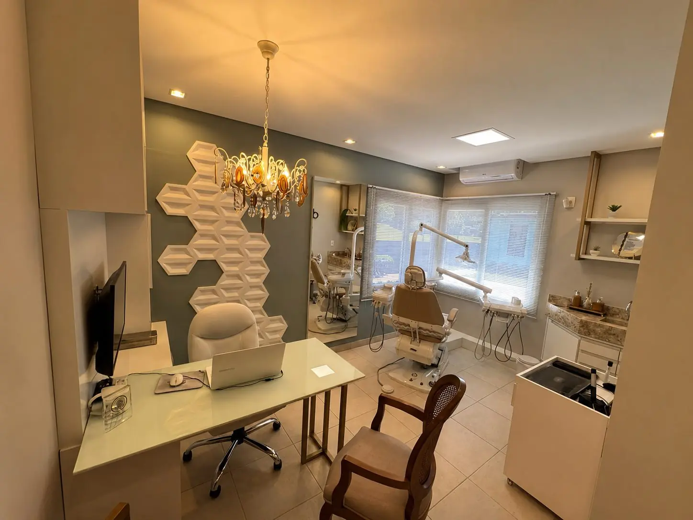
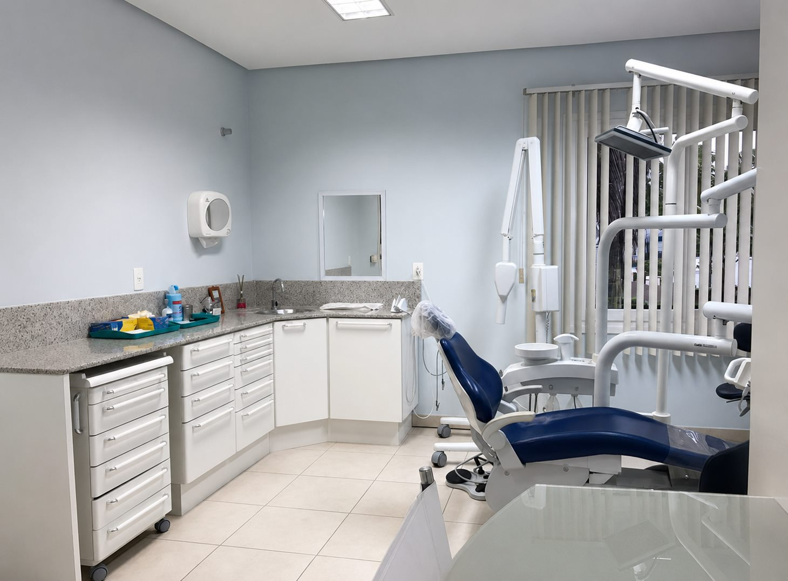
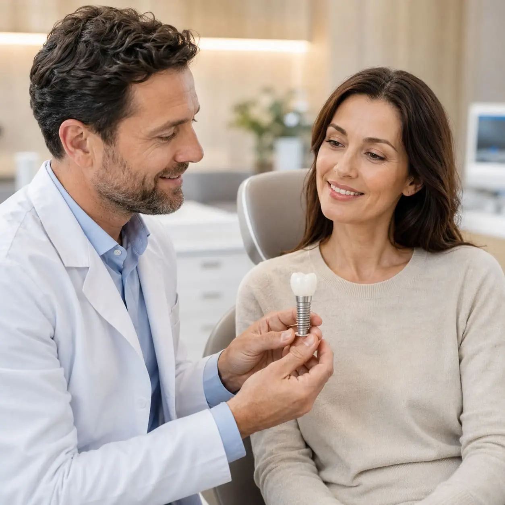
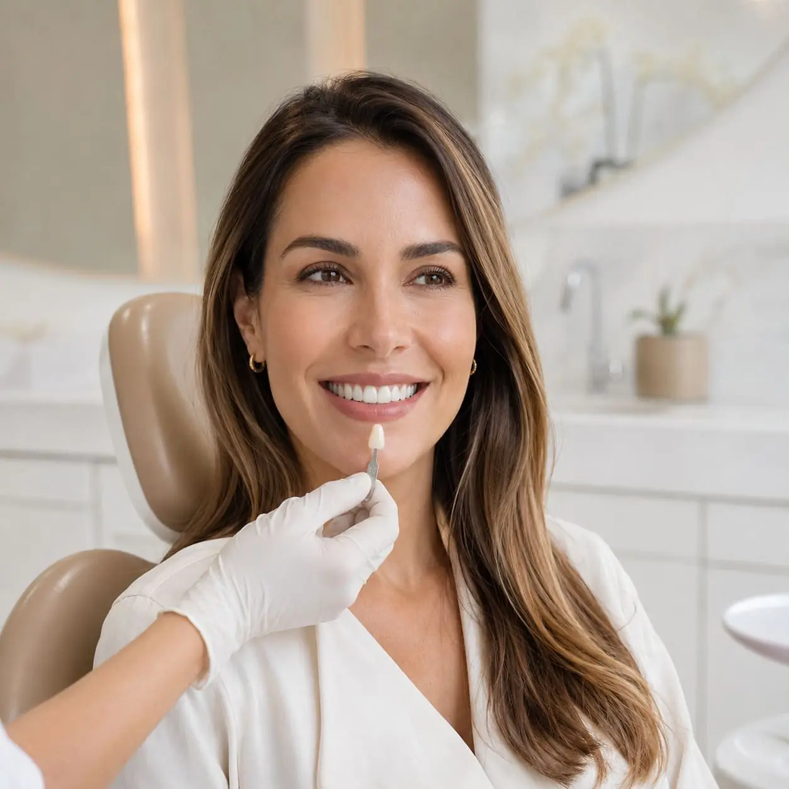
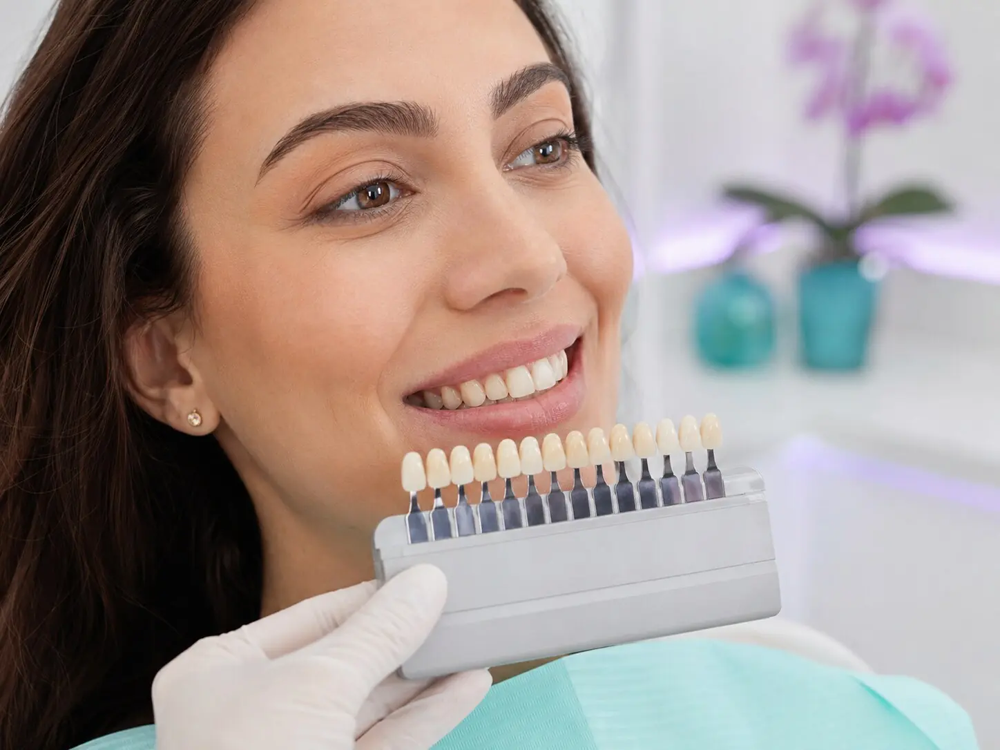
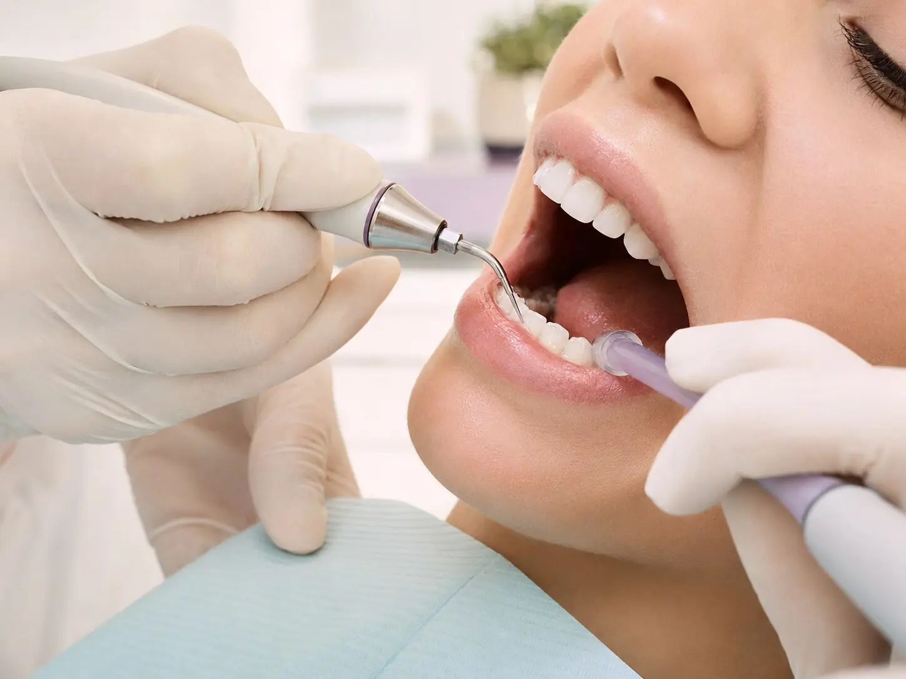

Vídeo do caso 01Espaço reservado · até 1 minuto
Caso 01Antes e depois

Implantes, próteses e tratamentos de reabilitação oral em Taquara e região para pacientes que desejam mastigar melhor e voltar a sorrir com mais confiança.
Devolver o sorriso de uma pessoa é mais do que um procedimento. É ajudar a recuperar a qualidade de vida e a autoestima. E as histórias falam por si.
Caso 01Antes e depois
Caso 02Antes e depois
Caso 03Antes e depois
Na De Paula Odontologia, você conta com uma estrutura completa para diagnóstico e planejamento do tratamento, com recursos como tomografia, ultrassom e scanner intraoral na própria clínica, além de uma equipe de especialistas preparada para acompanhar cada etapa com mais segurança e precisão.

Um ambiente acolhedor para receber você desde a chegada.

Consultórios preparados para diferentes tipos de atendimento.

Tomografia na própria clínica para auxiliar no diagnóstico e no planejamento do tratamento.
Tecnologia que ajuda a tornar a avaliação mais detalhada.
Profissionais de diferentes especialidades trabalhando de forma integrada.

Substitua dentes perdidos e passe a ter mais segurança para mastigar e sorrir.

Mais estabilidade, conforto e segurança no dia a dia.

Melhore a aparência do seu sorriso respeitando a harmonia do seu rosto.

Cuidados para preservar a saúde dos dentes, da gengiva e acompanhar sua saúde bucal ao longo do tempo.
A De Paula Odontologia reúne profissionais de diferentes especialidades para avaliar, planejar e acompanhar cada etapa do seu tratamento.
[Especialidade]
[Especialidade]
[Especialidade]
[Especialidade]
O procedimento é realizado com anestesia e planejamento prévio. O nível de desconforto e o tempo de recuperação podem variar de acordo com cada caso. Durante a avaliação, a equipe explica como funciona o tratamento e tira suas dúvidas antes do procedimento.
Depende de cada caso. A quantidade e a qualidade óssea precisam ser avaliadas antes da indicação do tratamento. Exames como a tomografia ajudam a equipe a entender melhor essa condição. Quando necessário, também podem existir alternativas ou procedimentos complementares.
O tempo varia de acordo com o tipo de tratamento e as condições de cada paciente. Após a avaliação, a equipe consegue explicar as etapas previstas para o seu caso.
Sim. As condições disponíveis podem ser apresentadas de acordo com o tratamento indicado. Converse com nossa equipe para conhecer as possibilidades.
Na primeira avaliação, a equipe conversa com você, entende sua principal necessidade e avalia sua condição bucal. Quando necessário, exames podem complementar essa avaliação. A partir dessas informações, você recebe orientação sobre as possibilidades de tratamento e os próximos passos.
Preencha seus dados e nossa equipe entrará em contato para conversar com você e orientar sobre os próximos passos.